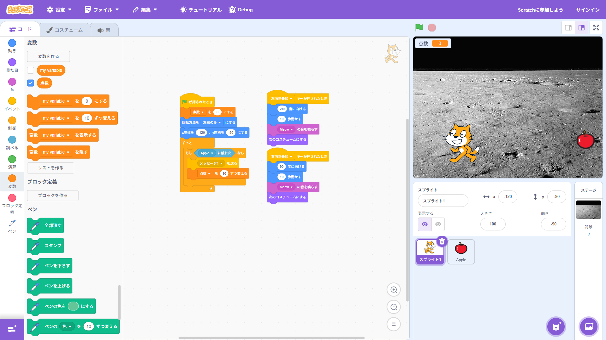

1週目のレポート ： 公大高専１年実習I-1
3a班13番 りー
第1週目
1-1 サイエンスアート
1.内容
Scratchをの使い方を理解する。変数、乱数を活用できるようになる。拡張機能のペンツールを使ってラインアートを作成するプログラムを作る。
2.感想
Scratchを使ったプログラミングが楽しかった。ラインアートがきれいだった。変数や乱数の活用方法についてよくわかった。
1-2 ゲーム

1.内容
変数、乱数を活用できるようになる。背景や新しいオブジェクトの作成。様々なブロックを書くようしてりんごキャッチゲームを作る。
2.感想
プログラミングの基礎的なことを理解することができた。Scratchでゲームを作るのが楽しかった。イベントブロックの使い方がわかった。
1-3 ホームページ作成
私のホームページ
1.内容
Githubからリポジトリをフォークして、自分のホームページを作る。index.htmlの内容を編集してみる。
2.感想
プログラマーになったみたいで楽しかった。Githubの使い方が少しわかった。これらを一から作る方法も知りたい。
各ページへのリンク
1週目のレポート
2週目のレポート
3週目のレポート
私のホームページ